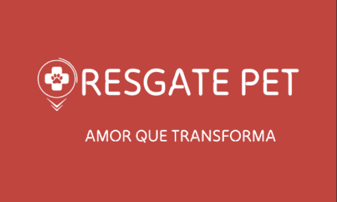
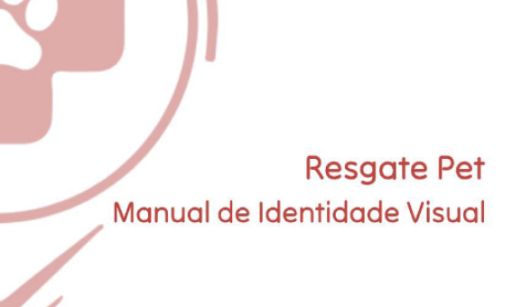
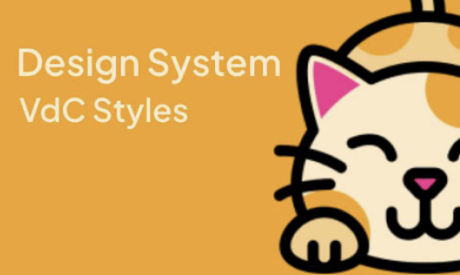
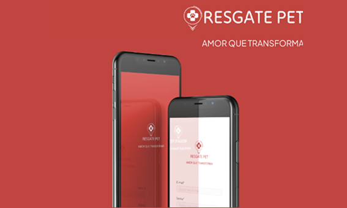
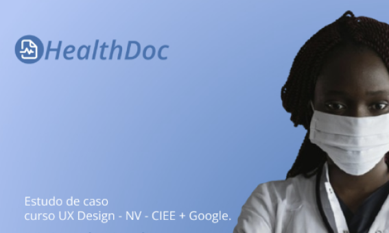

Projetos em Destaque
De ideias abstratas a estudos de caso, aqui estão alguns dos meus trabalhos mais recentes.
-

Pitch Resgate Pet
Aplicativo desenvolvido para ONGs e governo, com funcionalidades como permitir que uma pessoa comum acione o resgate de um animal em situação de rua, visualize eventos das ONGs, conheça os parceiros do aplicativo e veja as ONGs participantes.
Leia mais → -

Manual de Identidade Visual Resgate Pet
Esse manual do Aplicativo Resgate Pet é importante para manter a identidade da marca forte e reconhecível em todas as plataformas e junto ao público.
Leia mais → -

Design System Resgate Pet
O Design System foi desenvolvido para manter um conjunto de padrões, componentes e diretrizes que garantem a consistência e eficiência no design do aplicativo Resate Pet, facilitando a criação e a manutenção de interfaces coerentes.
Leia mais → -

Aplicativo Resgate Pet
O aplicativo Resgate Pet foi desenvolvido para facilitar o resgate de animais em situação de rua por pessoas comuns dispostas a ajudar.
Leia mais → -

HealthDoc
Foi criado um site responsivo que permite que médicos e enfermeiros documentem, armazenem e consultem registros de pacientes em um consultório.
Leia mais → -

Midia Social Sorveteria Sabor de Verão
Estudo de caso para mídia social da sorveteria Sabor de Verão.
Leia mais →